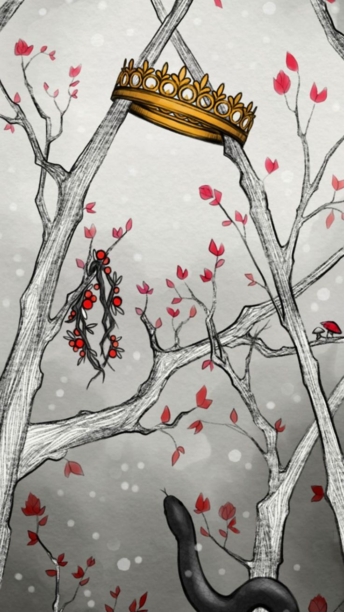

O Príncipe Cruel, de Holly Black, é um livro de fantasia que conta a história de Jude Duarte, uma humana que vai viver no Reino das Fadas depois da morte dos pais. Lá ela sofre muito preconceito, principalmente do príncipe Cardan, que é simplesmente insuportável no começo. Mesmo assim, Jude mostra que é uma verdadeira diva, inteligente, corajosa e pronta para enfrentar qualquer um para conquistar seu espaço.
Eu gostei muito do livro porque ele é literalmente viciante, cada capítulo entrega um surto diferente. A Holly Black simplesmente canetou muito na escrita, porque o universo é perfeito e os personagens têm muita personalidade. O romance entre Jude e Cardan é puro enemies to lovers, cheio de tensão e momentos que fazem a gente ficar “MEU DEUS”. Recomendo demais prof, porque esse livro é tudo, entretenimento puro, e tenho certeza que ela vai amar tanto quanto eu amei.